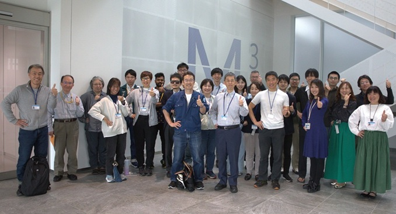
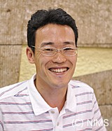

私たち材料モデリンググループでは、材料工学の4要素をつなぐモデリング技術を研究します。モデリング技術によって、実験を計算に置き換え、プロセスから構造、特性を経て、性能を予測する順問題の解析を高速化していきます。そして、順方向の解析手法を確立できれば、AIによる最適化アルゴリズムと組み合わせて、ほしい性能から最適な材料・プロセスをデザインする逆問題を解くことができるようになります。
このような計算機上での材料設計は、「マテリアルズインテグレーション」というコンセプトで提案され、内閣府SIP「革新的構造材料」・「マテリアル革命」においてMIntというシステムに具現化しています。我々は、マテリアルズインテグレーションのコンセプトを基盤として、さまざまな材料課題において、モデリングによる順問題の解析、逆問題による新しい材料・プロセスの提案を行っていきます。


